AI Academy · Level 1 · Grade 6 · Week 33 · Student lesson
Test Normal Cases
Learn to understand, design, build, test and explain AI systems responsibly.
Project: Helpful Classroom Sorter
Before you start
Weeks 15 and 23: keep evaluation unfamiliar and report denominators.
Plan time to read, investigate and explain. Keep predictions separate from observations.
Student lesson · 1 of 17
Your mission
Your learning target
I can plan routine cases with expected results derived from the requirements.
I can compare a fixed prototype and manual baseline on the same requests.
I can report every result and explain what a small test set cannot establish.
Remember before reading
Close your notes first. A rough first answer helps us choose the right starting point; it is not a score for your ability.
Without opening the old lesson, explain one key idea from Build a Paper Prototype. Give an example and a mistake that the idea helps you avoid.
Without opening the old lesson, explain one key idea from Choose Inputs and Outputs. Give an example and a mistake that the idea helps you avoid.
Without opening the old lesson, explain one key idea from Verify Important Outputs. Give an example and a mistake that the idea helps you avoid.
After trying, check the relevant lesson or ask your teacher. Change the part of your explanation that the evidence shows was wrong.
Repeated success on ordinary cases is necessary but not sufficient.
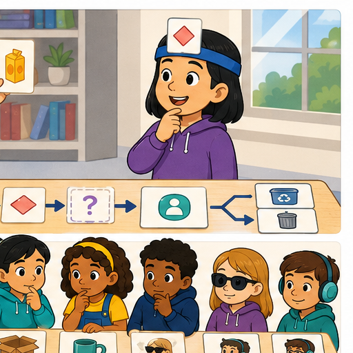
Learner name:
Readiness for the connected explanation
How does an expected result differ from an observed result, and why keep both when they disagree?
This week’s end goal
By the end, I can test routine cases against expectations and count full passes honestly.
Student lesson · 2 of 17
Notice the evidence
PICTURE STORY
Look Closely Before You Explain
Pictures give clues; evidence tells us what the clues mean.

What do you notice?
Name three visible details without explaining them yet.
Circle the detail most connected to the system's decision.
Name one detail that may be decoration or distraction.
Make a first prediction and state the clue that supports it.
My observations, prediction, and evidence:
A closer explanation
This week you will turn separate paper traces into a test record. Choose several ordinary requests, write the required answers first, then run the same saved prototype on every request. Testing is useful when it can reveal a mistake, so keep failures as carefully as successes. A demonstration chosen because it works is not a complete evaluation.
Use catalogue B version 1 in order: B1 Bookmark drawing, 10 minutes, quiet Yes; B2 Story circle, 8 minutes, quiet No; B3 Pattern puzzle, 12 minutes, quiet Yes; B4 Tower challenge, 15 minutes, quiet No. These fictional values assume materials are available. Inputs are whole minutes from 0 to 30 and Quiet required Yes or No. Time must fit AND either quiet is not required or the activity is quiet. No allows either kind. Select the first fit with a correct reason; otherwise report no match. Missing or invalid input requires clarification. No booking or publishing takes place.
Keep the P1 version 1 instructions from Week 32: validate and stop with clarification if input is invalid; otherwise start at B1, check both conditions, suggest the first passing row and stop. After a failure advance one row; report no match only after all rows fail. Reset to validation and B1 for each new valid request. The manual baseline marks every row against both conditions and selects the first fit. Both methods must follow the same contract.
Student lesson · 3 of 17
See how it works
VISUAL MECHANISM
Input → Process → Output
Follow the information instead of imagining magic inside the machine.
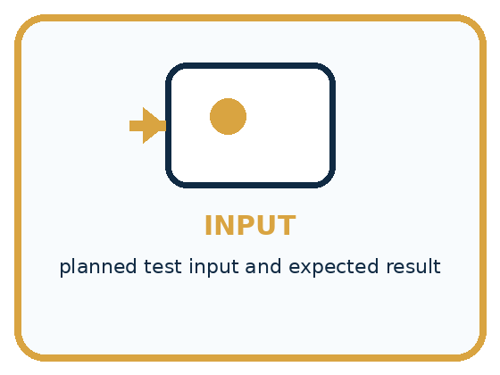
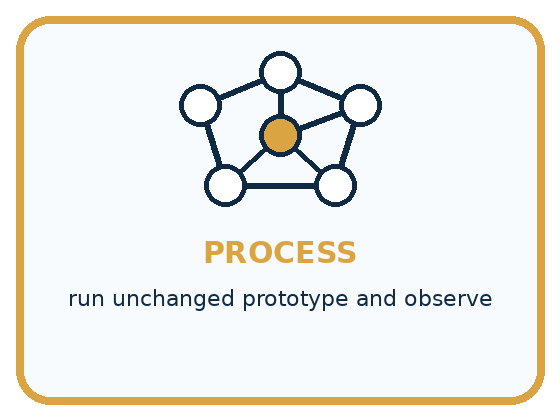
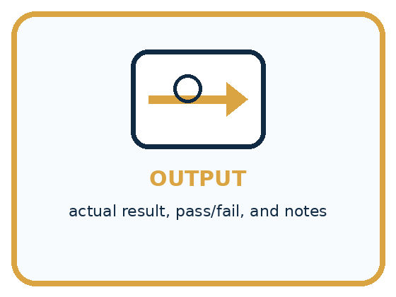
INPUT planned test input and expected result
PROCESS run unchanged prototype and observe
OUTPUT actual result, pass/fail, and notes
Draw a fresh example with all three stages:
A closer explanation
From a planned case to evidence
Give each case an ID. Record its exact input, purpose, expected output and expected explanation before running it. Then add observed output, observed explanation, pass or fail, and a trace reference. Put the prototype version, catalogue version and baseline method at the top of the sheet. A pass needs the correct result and a reason supported by the checked conditions; the right activity with a false reason is not a full pass.
Our routine set R contains four valid requests. R1 is 11 minutes Yes, checking an early quiet match. R2 is 9 minutes No, checking that the search reaches a later fitting row. R3 is 6 minutes No, checking that a valid request can exhaust the list. R4 is 9 minutes Yes, checking that a time fit alone is insufficient. These cases do not cover every accepted input or validation error.
Connect the picture and the explanation
Point to the input, the deciding step and the result in this week’s visual. Explain the same step in ordinary words. A picture helps when you can say what each part represents.
Student lesson · 4 of 17
Compare the cases
PICTURE GALLERY
Four Cases, Four Clues
Use the visual cue, then read the evidence carefully.
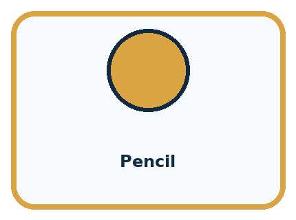
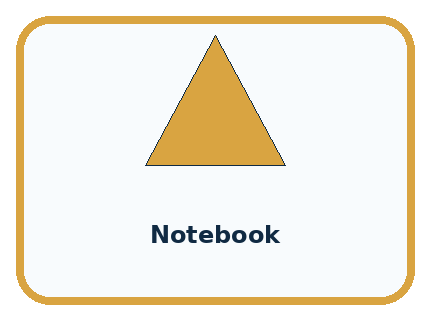
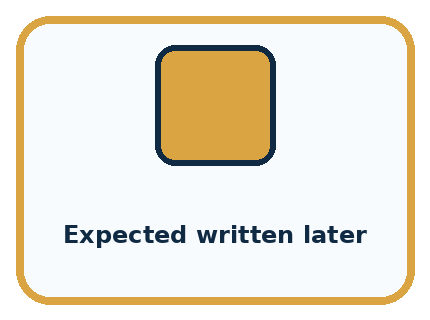
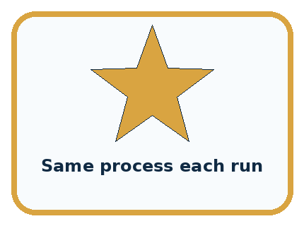
CASE 1 — Pencil Clue: common clear item. Meaning: normal case.
CASE 2 — Notebook Clue: common clear item. Meaning: normal case.
CASE 3 — Expected written later Clue: changed after result. Meaning: weak evidence.
CASE 4 — Same process each run Clue: controlled setup. Meaning: reproducible.
Which two pictures are easiest to confuse? What evidence separates them?
Change one thing in the pictured case
Change: Prototype reports none for request 6 instead of P1.
Prediction: That run still fails.
Reason: P2 can hold 6, so none is also wrong under the first-fit rule.
Student lesson · 5 of 17
Words that unlock the idea
VOCABULARY
Words You Can See and Use
The badge is a memory cue; the definition does the real thinking work.
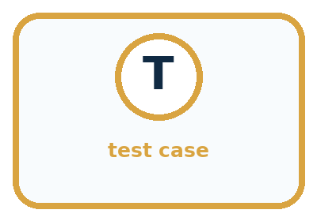
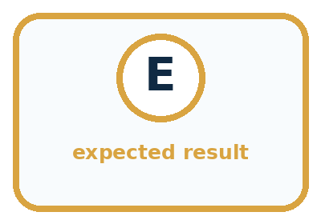
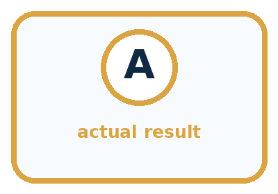
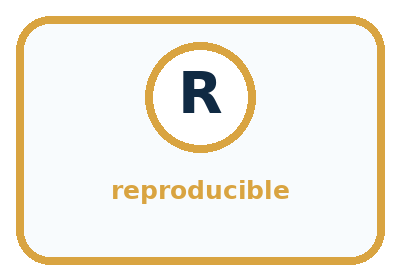
| Word | Meaning | My example |
|---|---|---|
| test case | planned input and expected behavior | |
| expected result | prediction written before running | |
| actual result | observed behavior | |
| reproducible | another tester can repeat the setup |
Misconception detective
CLAIM TO REPAIR Five passes prove the system is ready for every item.
Use one vocabulary word and one piece of evidence to repair it:
Words used in the closer explanation
| Word | Meaning |
|---|---|
| Test set | A collection of cases used together to check a version |
| Pass criterion | The requirement an observed result must meet to count as a pass |
| Coverage | Which conditions or behaviours the selected tests examine |
| Baseline | A simple comparison method tested under the same conditions |
Student lesson · 6 of 17
Follow a worked example
WORKED EXAMPLE
Watch the Reasoning, Not Just the Answer
Every step connects a claim to observable evidence.

STEP 1 — OBSERVE planned test input and expected result
STEP 2 — TRACE run unchanged prototype and observe
STEP 3 — CONCLUDE actual result, pass/fail, and notes
What new evidence could change this answer?
A closer explanation
| Case and request | Expected output and reason | Fictional observed Q version 0 |
|---|---|---|
| R1 11 minutes Yes | B1; 10 fits 11 and B1 is quiet | B1 with the same correct reason; pass |
| R2 9 minutes No | B2; 8 fits 9, quiet unrestricted, B1 too long | B2 with the same correct reason; pass |
| R3 6 minutes No | No match; all activities take longer | No match with the same correct reason; pass |
| R4 9 minutes Yes | No match; B2 is not quiet and other rows take longer | B2 because 8 fits 9; fail |
This is an invented record for a comparison prototype Q version 0, not a claim about your P1 runs. Q ignores the quiet condition when searching. Its trace explains the R4 failure. In the same fictional comparison, the manual baseline produced the expected result and correct explanation on all four cases: 4 of 4 full passes. Q achieved 3 of 4. The denominator includes the failed case.
On this set Q has fewer full passes than the baseline. This supports investigating its quiet check; it does not establish performance on all requests. Do not claim a speed advantage because we did not measure time. Correct implementations of P1 and the baseline can both pass all four, in which case these results show no correctness advantage for either method.
Learn from the worked case
Cover the result before checking it. Say what is given, choose the procedure, and follow one step at a time. Then uncover the result and explain your first mismatch. Ask why a step is allowed, not only what number it produces.
A pictorial worked case: Test Normal Cases
A fictional pencil-pouch finder has been run on four ordinary requests.
The facts we will use
Catalogue: P1 capacity 3, P2 capacity 7; first fitting pouch. Valid whole counts 1–9.
Requests 2,4,6,8; recorded outputs P1,P2,P1,none. These are invented records, not class results.
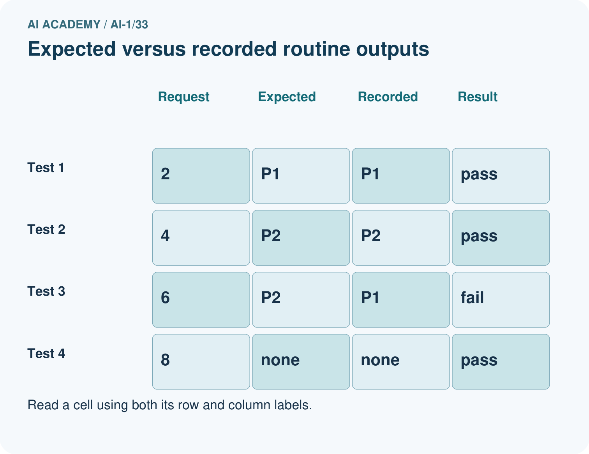
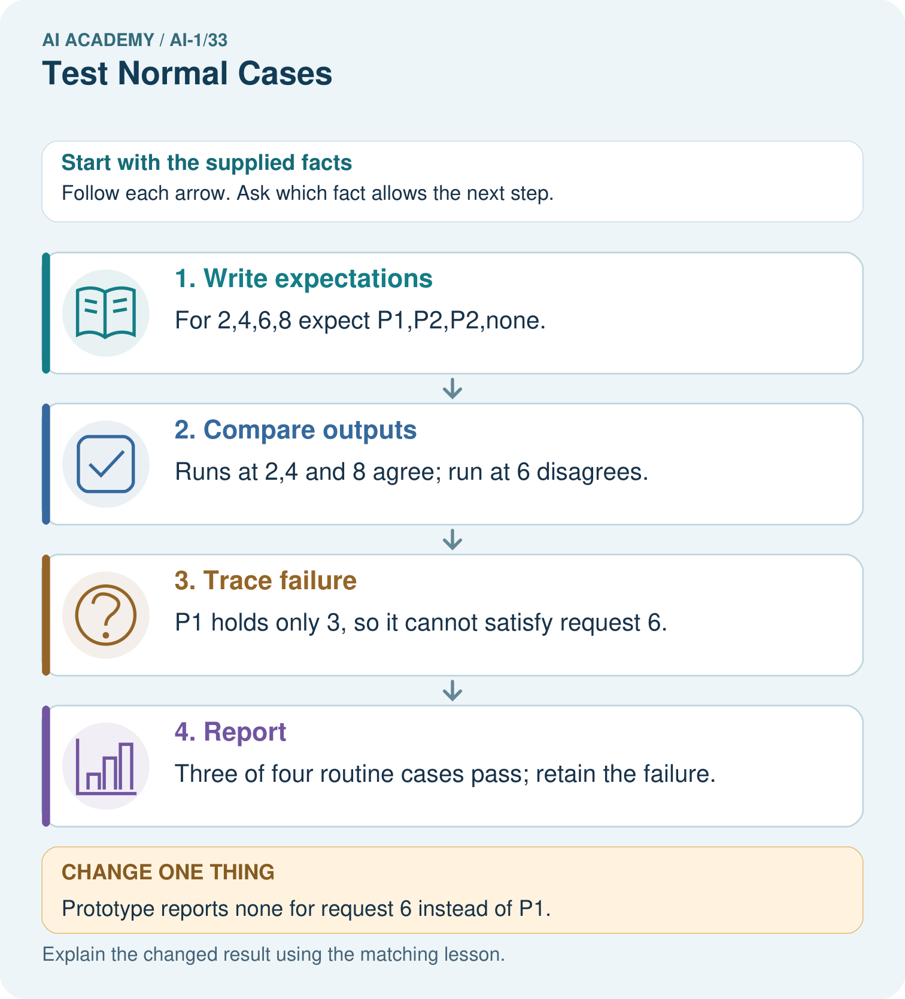
Read the picture one step at a time
Why this result follows
An ordinary case is not automatically correct. Define expected outputs from the contract before reading prototype outputs. Checking both selected ID and eligibility catches the wrong P1 suggestion. A no-match output can be a full pass when that is exactly what the valid request requires.
What this example does not establish
Four routine tests do not cover equality, invalid inputs or every relevant classroom condition.
Read the labelled picture: Why is none correct for 8 but incorrect for 6? Use both capacity cards.
Change one thing: Prototype reports none for request 6 instead of P1. Predict the result before checking the explanation. What remains the same?
Student lesson · 7 of 17
Find and repair a mistake
COMPARE
Same Result, Different Reason
A comparison helps reveal the true concept boundary.
| Case | Evidence | What it shows |
|---|---|---|
| Pencil | common clear item | normal case |
| Notebook | common clear item | normal case |
| Expected written later | changed after result | weak evidence |
| Same process each run | controlled setup | reproducible |
Repair two tempting claims
CLAIM A Five passes prove the system is ready for every item.
Repair:
CLAIM B A failed test should be removed because it lowers the score.
Repair:
A closer explanation
A useful report names the version, catalogue, case set, full-pass count and total, then describes each failure and the requirement it breaks. Keep the trace so someone can reproduce the result. Say which conditions have not been tested. Four passing runs support a claim about those four runs; they do not prove that every possible request works.
For catalogue B, any request allowing B3 also allows the earlier quiet B1; any request allowing B4 also allows earlier B1 when quiet is not required. Therefore the first-match rule never selects B3 or B4 with this catalogue. Checking those rows in a no-match trace is different from testing a successful output from a later row. Next week we will deliberately examine boundaries and labelled catalogue variations while keeping the requirements explicit.
Student lesson · 8 of 17
Practise together
GUIDED PRACTICE
Try It, Check It, Explain It
Use support now so you can succeed independently later.

Explain how the picture story demonstrates this idea: Repeated success on ordinary cases is necessary but not sufficient.
Use a fresh example to explain test case.
Trace a new input → process → output example.
Find and repair the error in: A failed test should be removed because it lowers the score.
Invent one edge case and name the safe response.
A closer explanation
Before testing your own cards, finish all four expected results and agree the pass criterion. Swap roles: one pupil operates and the other records. Keep the same version throughout the set and begin a fresh run for each request. Record what happened even if a card is ambiguous or the operator makes a mistake. A run that stops without a required answer is a failed run to investigate, not a row to delete.
Run the manual baseline on the same four requests and catalogue. Record its actual results too; a person can make an error in either method. If you find a defect, preserve this set’s results, save a new version and start a separately labelled set after the repair. Never combine the best result from each version into a score for one version.
Practise with less help: Run a fair comparison
Use workbook W2 for the connected example “Testing routine cases”. First fill the input and rule boxes. Try the middle steps before asking for a hint. After a hint, try the next step yourself.
| Plan | Do | Check |
|---|---|---|
| What is given? Which rule or procedure applies? | Record each intermediate step. | Does the result follow? What remains unknown? |
Explain your trace to a partner. Your partner points to one step to check. Swap roles on the next case. Each person writes their own explanation.
Check your reasoning
Use the worked case for Testing routine cases. Proposed explanation: “A correct label is always a full pass”. Decide whether this explanation is supported. Point to the step or supplied fact that decides; explain your repair if needed.
Answer on your own before discussion. If you are unsure, say which step you need help with.
Explain the picture
Why is none correct for 8 but incorrect for 6? Use both capacity cards.
This is supported practice. Keep the separately named independent case for an attempt before feedback.
Student lesson · 9 of 17
Run the investigation
EXPLORER LAB
Five-Case Normal Test
Predict first, test honestly, and explain what the evidence means.

State your prediction before the result is known.
Complete the task: Run five planned tests and log expected versus actual.
Keep a normal case and an edge case clearly separated.
Record what happened—even when it does not match your prediction.
Explain the result, one limitation, and the next useful test.
| Case | Prediction | Observed result | What it means |
|---|---|---|---|
| Normal | |||
| Edge |
Plan → try → check
Before trying: what do I expect, and why? While trying: which step could first go wrong? Afterwards: what did I actually observe, and what should change? Keep “not run” if you only traced the procedure.
Student lesson · 10 of 17
Build your understanding
PRACTICE LADDER
Climb from Recall to Defense
Each step asks for a stronger kind of understanding.

RECALL Define test case.
EXPLAIN Repeated success on ordinary cases is necessary but not sufficient.
TRACE Show the input, process, and output.
DIAGNOSE Repair: Five passes prove the system is ready for every item.
TRANSFER Apply the idea to a new home or classroom case.
CREATE Design one revealing test.
DEFEND Give a claim, evidence, mechanism, limit, and safe action.
Student lesson · 11 of 17
Connect your project
PROJECT
Helpful Classroom Sorter
Build one coherent system across the year, one evidence-based decision at a time.

What real classroom need does this serve?
What information is necessary—and what should stay private?
What happens inside the process?
What normal and edge cases will you test?
When should it say not sure or ask a person?

My project decision:
Evidence for your project
Maintain sorter tests with input, independently derived expectation, actual output, version and full-pass judgment.
Student lesson · 12 of 17
Show what you know
MASTERY
Fresh-Case Independent Proof
Complete this after teaching and guided practice have ended.

□ Name or draw the fresh case.
□ Trace input, process, and output.
□ State the conclusion and strongest evidence.
□ Name one limit, failure, missing clue, or fairness/privacy concern.
□ Explain one safe next action or improvement.
Independent evidence:
My level: □ Not yet □ With one hint □ Independently □ I can teach it
Student lesson · 13 of 17
Study a complete case
Week 33 Worked case
Use the supplied details to practise the weekly concept before attempting the independent question. This case extends the illustrated lesson.
The situation
Four routine cases are chosen before testing. Three are correct.
The question
What can be reported?
Worked explanation
3/4 on those cases. Preserve the failure and trace its cause. This does not guarantee unfamiliar-case performance.
Explain it in your own words
Which detail supports the answer, and why does it matter?
Trace the supplied case visually
Report the cases actually tested
| Evidence or stage | Value or result |
|---|---|
| Routine cases | 3/4 |
Four routine cases are chosen before testing. Three are correct.
What can be reported?
3/4 on those cases. Preserve the failure and trace its cause. This does not guarantee unfamiliar-case performance.
Student lesson · 14 of 17
Try a new case independently
Independent case: Audit a new test record
Independently audit this fictional equipment selector. Catalogue E has E1 first with capacity 4 and E2 second with capacity 8. Valid group sizes are whole numbers 1 to 10. Select the first item with capacity at least the group size, or no match; invalid input needs clarification. The saved prototype reports E1 for group 3 with reason “4 holds 3”; E1 for group 6 with reason “4 holds 6”; no match for group 9 with reason “both too small”. Write all expected results, mark full passes, calculate the fraction and explain the failure. Give one untested input category. No booking occurs.
Attempt this case before feedback. Record any help. Earlier examples below are further practice; a case already practised with feedback cannot establish fresh transfer.
Week 33 Independent application
Close the worked explanation. Apply the idea to this different question without copying.
Test a sorter on two clear pencil cards and two clear book cards. It gets one book wrong. Report the result and keep the failed case.
My answer, with a trace, calculation or supporting evidence
Create and test
Change one relevant detail. Predict the result before testing. Include a boundary or missing-information case when it helps reveal a limit.
My changed input and expected result
Connect to your project
Create and run the sorter's normal-case test plan with unique IDs and version label.
The evidence I will keep
Your teacher has the independent answer and scoring criteria. Complete the matching workbook week to keep your practice evidence together.
Transfer practice from the original programme
A sorter passes five routine cases and fails one. A team removes the failure as 'unusual' and reports 100%. Correct the report and propose a next test.
Use feedback to improve
Attempt the independent case before hints. Record whether you worked alone, used a hint or followed a model. After feedback, fix the first unsupported step and explain why it changed. A later check uses a changed case, not a copied answer.
Student lesson · 15 of 17
Your lesson route
Start with this question: A fictional pencil-pouch finder has been run on four ordinary requests.
| By the end, I can | How I will show it |
|---|---|
| Plan routine cases with expected results derived from the requirements | Explain the deciding step, show a trace or test, and state one limit. |
| Compare a fixed prototype and manual baseline on the same requests | Explain the deciding step, show a trace or test, and state one limit. |
| Report every result and explain what a small test set cannot establish | Explain the deciding step, show a trace or test, and state one limit. |
Remember → watch and explain → try with help → investigate → try independently → keep project evidence. Your teacher may spread this lesson across several classes.
Keep your first prediction. Compare it with what the evidence shows and explain any change.
Student lesson · 16 of 17
Finish and return
Close your notes. Explain this goal in your own words: Plan routine cases with expected results derived from the requirements
If you are unsure, return to the worked picture and explain one arrow. If you are ready, change an input or assumption and justify your prediction.
Save your workbook evidence. At the next review, try a different case before opening your old answer.
Student lesson · 17 of 17
Supported practice, repair and portfolio
Use this supported practice once, in the browser or on paper. Keep the reserved independent assessment for a separate first attempt before teacher feedback.
A fictional pencil-pouch finder has been run on four ordinary requests.
Practice 1: explain the deciding evidence
Which labelled step matches this detail? Three of four routine cases pass; retain the failure.
1. Trace failure
2. Write expectations
3. Compare outputs
4. Report
Hint if needed: Read the steps in the pictorial case. Match the supplied detail to the stage that performs or records it.
After your attempt, compare with the supported explanation: Report Three of four routine cases pass; retain the failure. An ordinary case is not automatically correct. Define expected outputs from the contract before reading prototype outputs. Checking both selected ID and eligibility catches the wrong P1 suggestion. A no-match output can be a full pass when that is exactly what the valid request requires.
Practice 2: explain the deciding evidence
Changed-case practice: Prototype reports none for request 6 instead of P1. Which conclusion is supported by the supplied facts?
1. We can decide the result without examining the changed input or the procedure.
2. That run still fails.
3. This one example guarantees correct results for every future input.
Hint if needed: Use the changed condition and the deciding step in the pictorial trace. The answer must say what follows from those facts.
After your attempt, compare with the supported explanation: That run still fails. P2 can hold 6, so none is also wrong under the first-fit rule.
Repair a missing building block
Review Build a Paper Prototype (ai-1/32). Goal: Build a runnable paper prototype with explicit instructions and visible state. Short practice: What should appear in the test log before and after the repair?. Return to this week and explain what you changed.
Review Choose Inputs and Outputs (ai-1/30). Goal: Turn the project outcome into precise input and output requirements. Short practice: Trace requests 10 and blank. Why should they not receive the same explanation?. Return to this week and explain what you changed.
Review Verify Important Outputs (ai-1/27). Goal: Separate an answer into claims and connect each claim to relevant evidence. Short practice: Correct the draft and identify which part needs another source rather than a calculation.. Return to this week and explain what you changed.
Keep your completed work
Use Download completed work in the hosted lesson to export your answers, reflections, practice feedback and code-run evidence. Open the HTML copy to read or print it. Drafts stay in this browser when storage is available; clear drafts on a shared device.